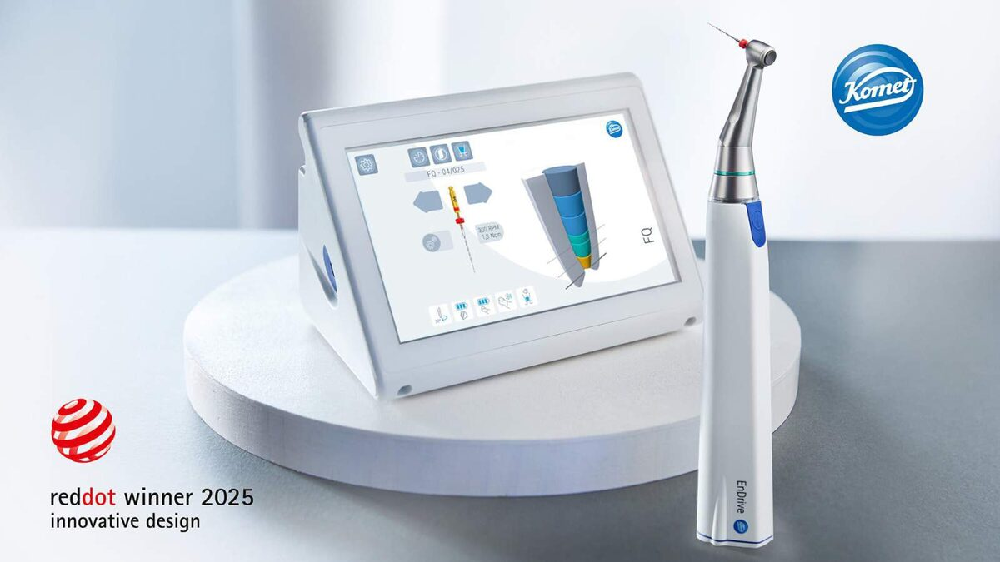

Brasseler wins the Red Dot Design Award 2025: Innovation with a system
Published on 19 September 2025
Lemgo, 19 September, 2025
Brasseler is setting new standards in dentistry: the Lemgo-based family business has received the Red Dot Design Award 2025 for the new EnDrive – an innovation developed by the product brand Komet Dental. The EnDrive shows that the brand Komet Dental has long been doing by far more than just manufacturing traditional dental instruments: Komet Dental is all about intelligent developments that make day-to-day work in dental practices easier and offer patients a better treatment outcome.
What the EnDrive can do
The EnDrive is a compact, mainly wireless device that supports dentists during one of the most complex procedures: the treatment of the root canal. It directs the special files that mechanically prepare the root canal from the inside and automatically signals when the desired depth has been reached. This means that treatments can be carried out faster, more safely and with less strain, both on the dentist and the patient.
From the initial idea to the solution – a living culture of innovation
In the dental sector, Brasseler has been thinking beyond the traditional bur for a long time: the EnDrive represents the step from individual instruments to an intelligent system that simplifies processes and provides safety.
“The EnDrive is intuitive to use: Young dentists quickly become familiar with it, while their more experienced colleagues appreciate the EnDrive’s special features that make their work even more precise. The compact design combines ease of use with maximum performance, without any compromises. The clear, minimalist design language meets the modern standards that are expected in dental practices today.”
Dr. med. dent. Vera Albrecht-Hahner
Confirmation of the path taken
Brasseler was already honored in 2023 with the TOP 100 Award as one of the most innovative medium-sized companies in Germany. The jury praised the clear development processes and the ability to turn ideas into market-ready solutions. The current presentation of the Red Dot Award shows: We are on the right course and are successfully continuing on it.

“As a family-run company, we can think long-term and make bold investments. The EnDrive is the result of this attitude and proof that we not only manufacture instruments but also develop holistic solutions that make a difference worldwide.
For Brasseler, the award is one of many incentives to continue driving forward the development of innovative, modern technologies and digital systems. For even better patient care worldwide.”
Stephan Köhler, CEO Brasseler
About the Red Dot Design Award
The Red Dot Design Award is one of the most prestigious international awards for product design. Each year, a jury of over 40 independent experts selects outstanding products from around 60 countries. The evaluation criteria include innovation, functionality, ergonomics, sustainability, and design quality. Award-winning products are presented in exhibitions and publications worldwide.

About Komet Dental
Since 1923, Brasseler has been distributing the world’s largest range of rotary dental instruments and systems, for example for dentists, dental technicians, oral surgeons and orthodontists, under the name Komet Dental. Around 25,000 rotary dental instruments and systems are available through sales companies and partners in around 100 countries worldwide.
The comprehensive range includes sophisticated standard instruments and innovative solutions that set industry-wide standards. In addition to the classic ‘round bur’, the broad portfolio includes, for example, crown cutters, composite removers and polishers. The range is complemented by a multitude of other products, such as, for example, root canal file systems for endodontic treatments. Services such as the Komet Academy with training courses on the use of our products round off the program.

Press Contact
Melanie Köhler
Corporate communication
Phone +49 (0) 160 3447748
presse@brasseler.de